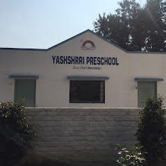
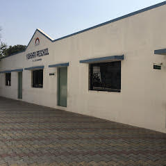
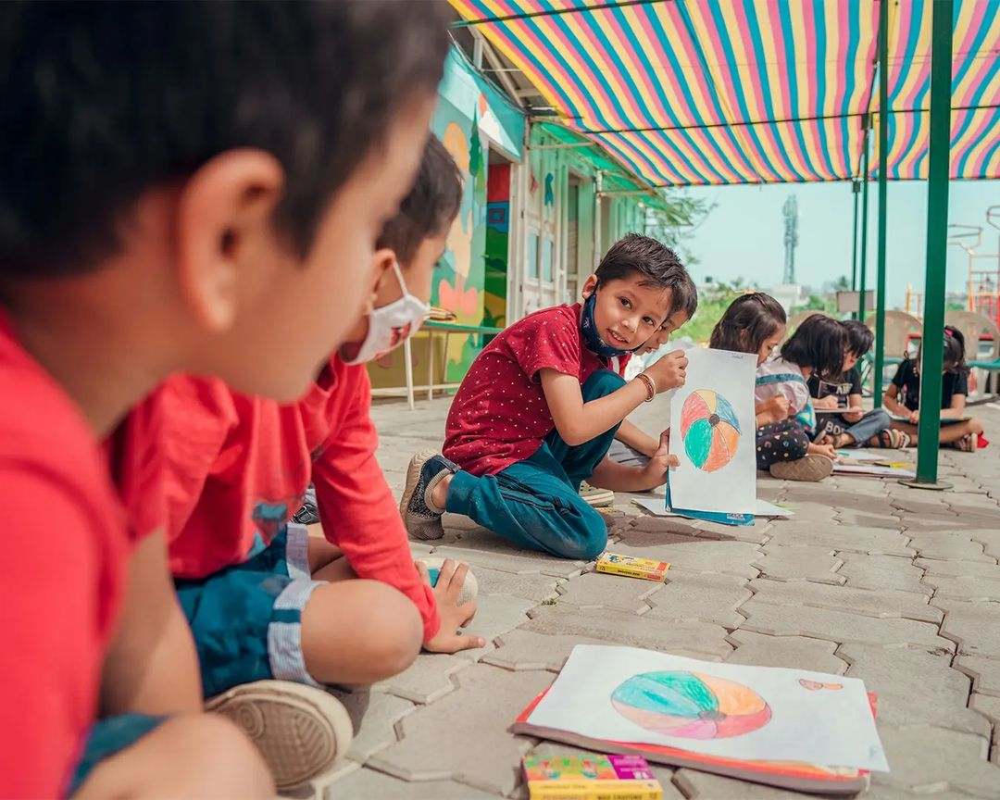

At Yashshrri Preschool we believe that each child is a unique individual who needs a secure, caring, and stimulating environment in which to grow and mature emotionally, intellectually, physically, and socially. It is our goal to ensure students meet their fullest potential in these areas by providing an environment that is safe, supports risk-taking, and invites a sharing of ideas. There are three elements that we at Yashshrri believe are conducive to establishing such an environment;
The teacher acting as a guide
Allowing the child’s natural curiosity to direct his/her learning.
Promoting respect for all things and all people.
We would love to invite you to come and visit with us to tour our brand new, beautiful stat-of-the-art facility